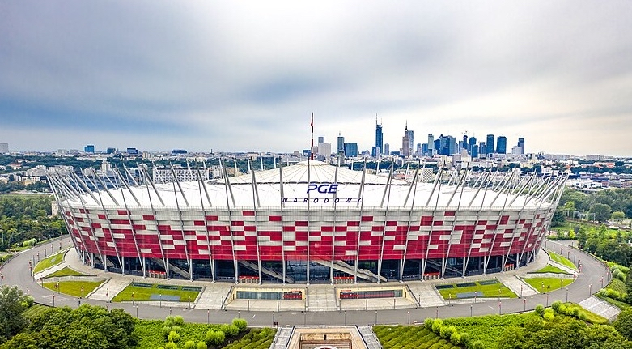

PGE Narodowy to jeden z najważniejszych stadionów w Polsce. Znajduje się w Warszawie. Został zbudowany na Mistrzostwa Europy w 2012 roku. Oficjalnie otwarto go w 2012 roku. Jest domem reprezentacji Polski w piłce nożnej. Jego pojemność wynosi około 58 tysięcy widzów. To nowoczesny stadion wielofunkcyjny. Charakterystyczna fasada ma biało-czerwone barwy. Stadion posiada rozsuwany dach. Obiekt może być wykorzystywany przez cały rok. Odbywają się tam koncerty muzyczne. Jest jednym z symboli nowoczesnej Warszawy. Posiada najwyższą kategorię UEFA. Gościł mecze Euro 2012. Odbywały się tam ważne mecze międzynarodowe. Stadion jest symbolem polskiego sportu. Znajduje się w centralnej części Warszawy. Ma bardzo dobre połączenia komunikacyjne. Atmosfera podczas meczów reprezentacji jest wyjątkowa. Obiekt wyróżnia się nowoczesną architekturą. Jest jednym z najważniejszych stadionów w Polsce.